Discovering Vietnam
Your ultimate guide in discovering Vietnam's culture, food and travel
Discover Vietnam’s vibrant culture, stunning landscapes, and delicious cuisine. Whether you’re a seasoned traveler or planning your first trip, this blog guides you through hidden gems, rich traditions, and unforgettable experiences. Join us on a journey across bustling cities and peaceful countryside to inspire your next adventure.
Destinations
From the bustling streets of Hanoi to the serene beauty of Ha Long Bay — explore Vietnam's top places.
.webp)
Food
Discover delicious traditional dishes and street food that define Vietnamese cuisine.
Culture
Learn about Vietnam’s festivals, traditions, and the stories behind them.
.webp)
Travel Tips
Get the best advice on when to visit, how to get around, and what to expect.
Destinations
1. Hanoi – The Timeless Capital
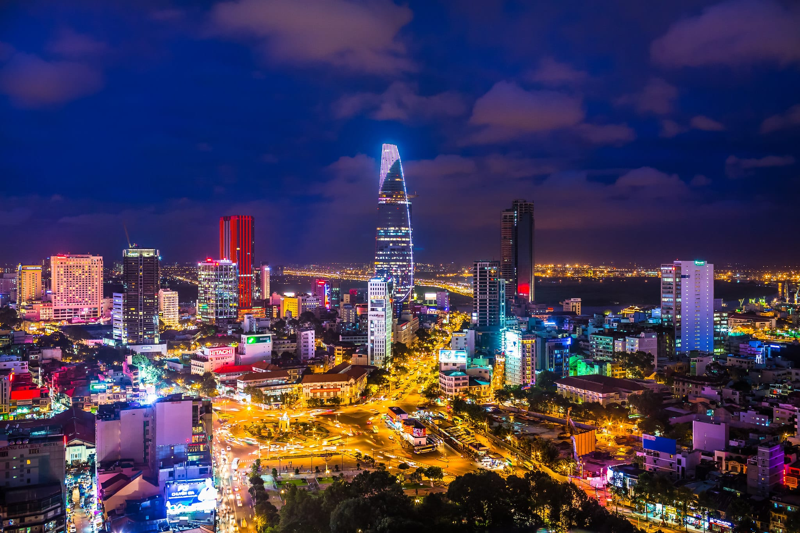Hanoi is a beautiful contradiction — chaotic yet charming, ancient yet vibrant. The Old Quarter buzzes with scooters, street food, and local life that moves to its own rhythm. Don’t miss a visit to Hoan Kiem Lake at dawn or the Temple of Literature, Vietnam’s first national university. Hanoi’s street food is legendary — try a hot bowl of pho or the crispy magic of banh mi on a plastic stool by the roadside.
2. Da Nang – Beaches and Bridges
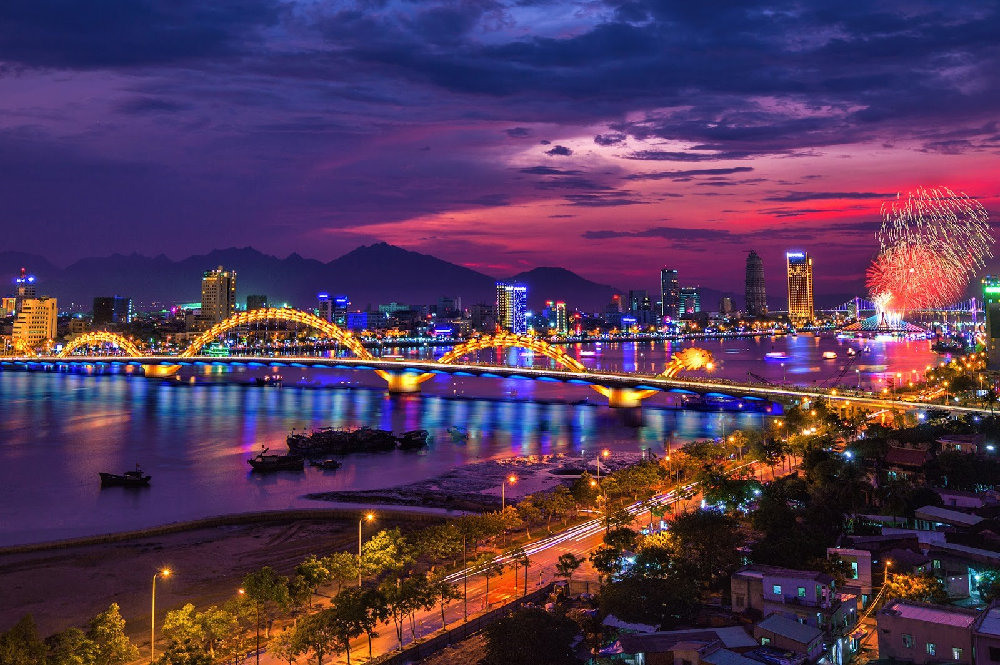Nestled between Hue and Hoi An, Da Nang is one of Vietnam’s most liveable cities. The golden sands of My Khe Beach stretch for miles, while the surreal Golden Bridge (held up by two giant stone hands) in the nearby Ba Na Hills has become an Instagram favorite. Don’t forget to climb Marble Mountains for stunning views and hidden pagodas.
3. Hoi An – Ancient Town of Lanterns
.webp)
Hoi An feels like it belongs to another time. This UNESCO World Heritage Site is famous for its lantern-lit evenings, tailor shops, and riverside charm. Stroll through streets lined with yellow buildings, visit the Japanese Covered Bridge, or take a lantern boat ride at night. Every full moon, Hoi An turns off its electric lights, and the entire old town glows with paper lanterns — pure magic.
4. Sapa – Misty Mountains and Ethnic Culture
.webp)
High in the northern mountains, Sapa is home to dramatic rice terraces, misty peaks, and vibrant ethnic minority cultures. Treks through the countryside bring you into contact with Hmong, Dao, and Tay villages, where homestays give you a glimpse of rural life. Fansipan, the highest peak in Indochina, can now be reached via cable car for those not up for the hike.
5. Ha Long Bay – Limestone Legends
.webp)
A natural wonder of the world, Ha Long Bay is every bit as stunning as the pictures suggest. Thousands of limestone karsts rise from emerald waters, best explored by overnight cruise. You can kayak into hidden caves, visit floating fishing villages, or just watch the sun set over the surreal seascape. It’s peaceful, breathtaking, and totally unforgettable.
Food
1. Phở – The Soulful Noodle Soup

Phở is Vietnam’s most iconic dish and a comforting staple across the country. This fragrant noodle soup combines slow-simmered beef or chicken broth with silky rice noodles, fresh herbs, lime, and chili. Each bowl is a warm hug in a bowl, perfect for breakfast, lunch, or anytime hunger strikes. Whether you enjoy it in a bustling street stall or a cozy café, a steaming bowl of phở is a must-try experience.
2. Bánh Mì – The Vietnamese Sandwich

Bánh mì is a perfect fusion of French and Vietnamese flavors wrapped in a crispy baguette. Inside, you’ll find savory pork, pate, pickled vegetables, fresh cilantro, and spicy chili. It’s cheap, portable, and packed with flavor — the ideal street food snack or quick meal. Every region offers a unique twist, but the classic Hoi An-style bánh mì is legendary.
3. Gỏi Cuốn – Fresh Spring Rolls
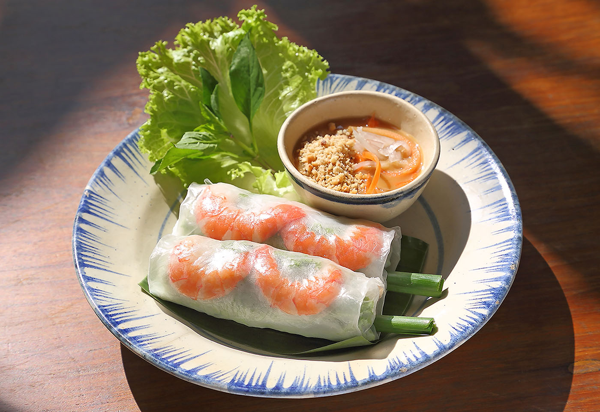Gỏi cuốn are light, fresh, and perfect for healthy snacking or appetizers. These translucent rice paper rolls are filled with shrimp, pork, herbs, vermicelli noodles, and lettuce. Dip them in a savory peanut sauce or spicy hoisin for a refreshing bite that’s both crunchy and soft. They’re a great option if you want something flavorful but not heavy.
4. Bún Chả – Grilled Pork with Noodles
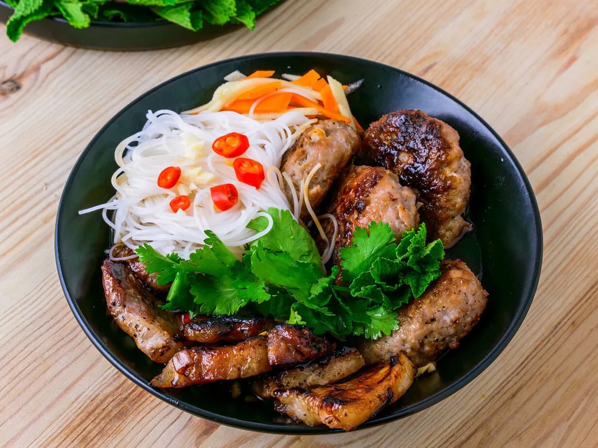Cơm tấm is the comfort food of southern Vietnam. Made from fractured rice grains, it’s usually served with grilled pork chops, shredded pork skin, a fried egg, and pickled vegetables. This humble dish is hearty, satisfying, and widely loved by locals for breakfast or lunch. Don’t forget the fish sauce drizzle — it’s the secret that ties it all together.
5. Chè – Sweet Vietnamese Dessert Soup
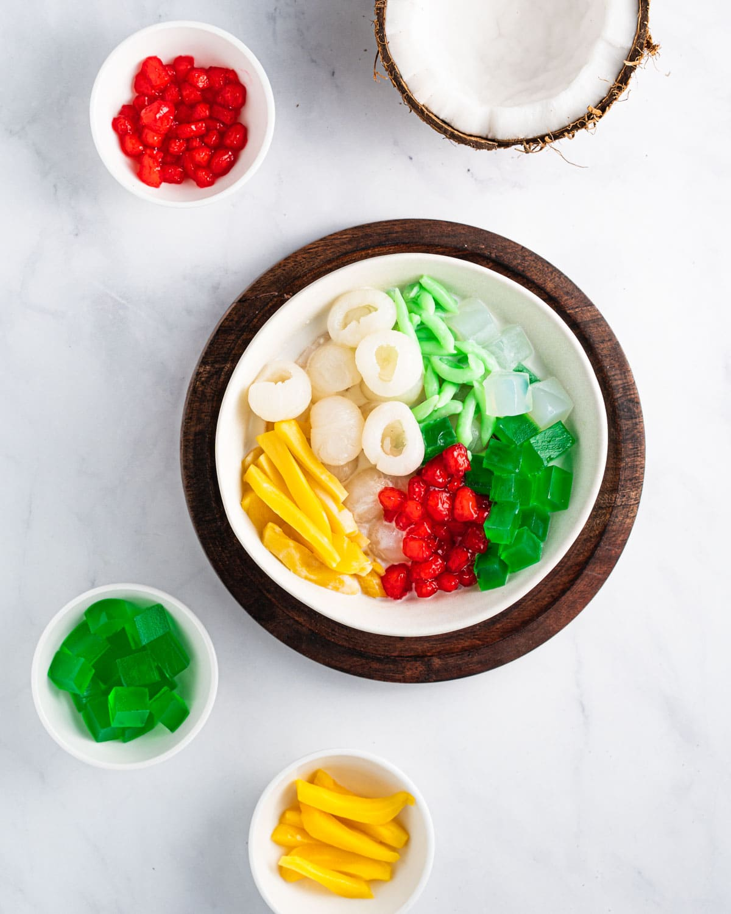Chè is a colorful and versatile dessert soup that comes in many variations — from mung beans to black-eyed peas, coconut milk, jellies, and tapioca pearls. Served cold or warm, it’s a refreshing treat that offers a burst of texture and sweetness. You’ll find chè stalls all over Vietnam, perfect for cooling down on a hot day or satisfying your sweet tooth.
Culture
1. Tet – Vietnamese Lunar New Year
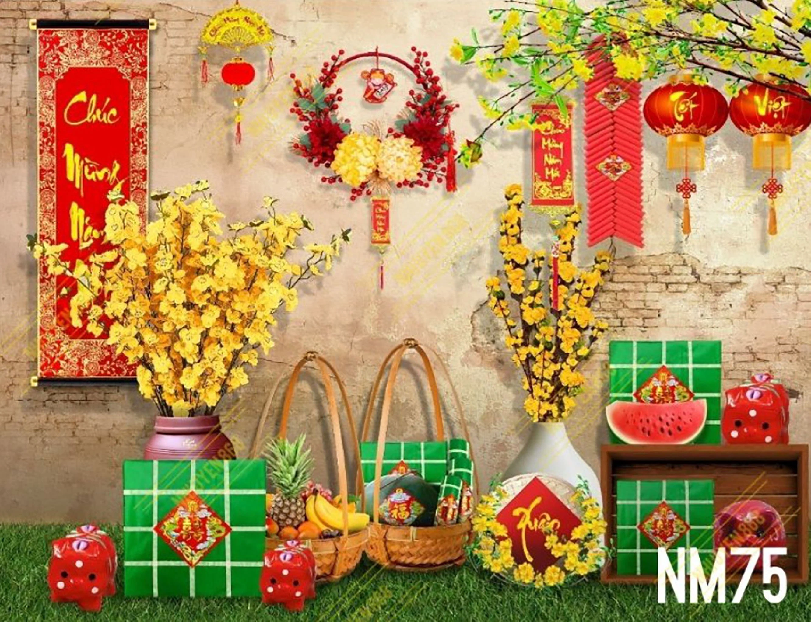Tet, the Vietnamese Lunar New Year, is the most important and widely celebrated festival in Vietnam. It’s a time for family reunions, paying respects to ancestors, and welcoming the new year with hope and good fortune. Streets come alive with colorful decorations, traditional music, and special foods like bánh chưng (sticky rice cake). Experiencing Tet offers a unique glimpse into Vietnam’s values of family, gratitude, and renewal.
2. Ao Dai – The Elegant National Dress
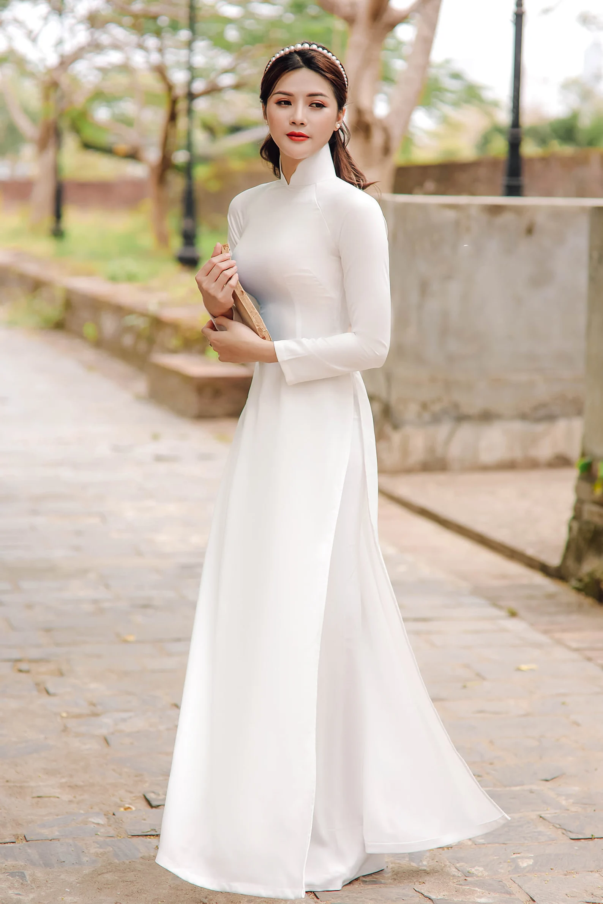The Ao Dai is Vietnam’s iconic traditional dress — a graceful, form-fitting tunic worn over loose trousers. Worn by women and sometimes men on special occasions, it symbolizes elegance, modesty, and Vietnamese identity. The Ao Dai comes in countless styles and colors, often customized for weddings, festivals, or school uniforms. Seeing locals wear Ao Dai is like watching history and fashion beautifully blend.
3. Lantern Festivals – Light Up the Night
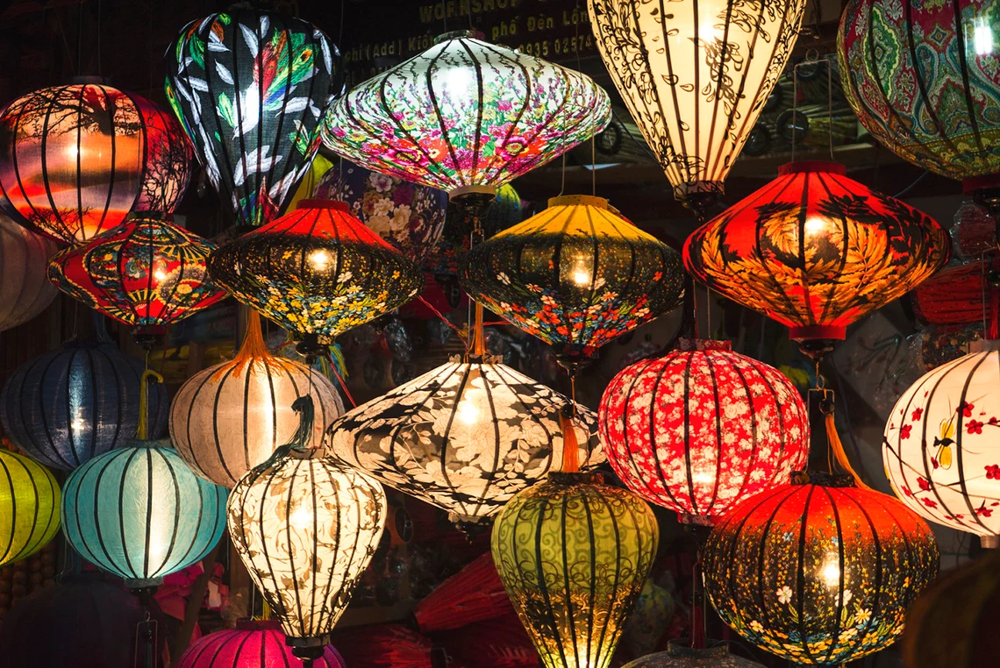Lantern festivals in Vietnam, especially in Hoi An, are magical events where the night sky and riverbanks glow with colorful lanterns. These festivals often coincide with the full moon and are times for making wishes, remembering loved ones, and celebrating community. Lanterns are released into the water or sky, creating a dreamlike atmosphere that enchants both locals and visitors alike.
4. Vietnamese Coffee Culture
.webp)
Vietnamese coffee culture is a ritual and a way of life. The famous drip coffee, often served with sweetened condensed milk (cà phê sữa đá), is slow-brewed and intensely flavorful. Coffee shops range from bustling street stalls to chic modern cafes, where locals spend hours chatting, working, or people-watching. Sipping Vietnamese coffee is more than a caffeine fix — it’s a chance to slow down and savor daily moments.
5. Ancestor Worship – Honoring the Past
.webp)
Ancestor worship remains a cornerstone of Vietnamese spirituality and family life. Many homes have altars dedicated to ancestors where incense is burned daily, and offerings are made during festivals and important family events. This practice reflects deep respect for family roots, continuity, and the belief that ancestors watch over and protect the living.
Travel Tips
1. Visa and Entry Requirements
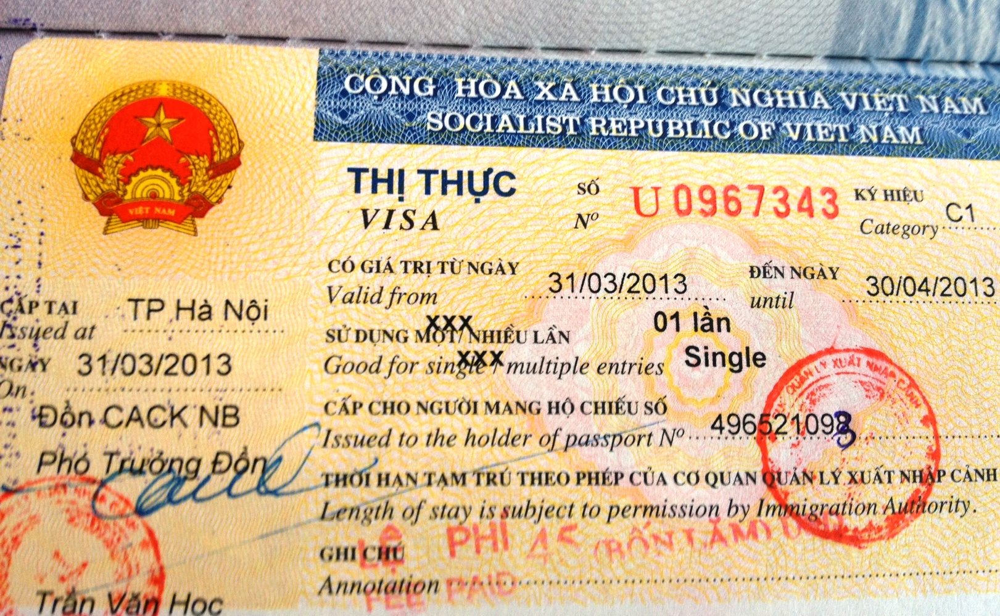Before you pack your bags, make sure you know the visa requirements for your nationality. Vietnam offers e-visas and visa-on-arrival options for many countries, but some travelers will need to apply in advance. Double-check your passport validity — it should be valid for at least six months beyond your arrival date. Staying informed helps you breeze through immigration without a hitch!
2. Currency and Budgeting
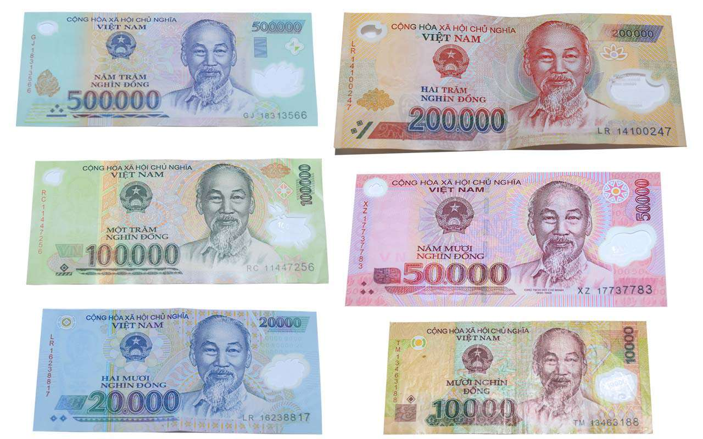Vietnam’s currency is the Vietnamese Dong (VND). Cash is king, especially in markets and small eateries, so carry enough, but be cautious with large bills as they can be hard to break. ATMs are widely available in cities, but less so in rural areas. Vietnam is generally budget-friendly, but always set aside a little extra for unexpected treats — like street food feasts or souvenirs.
3. Getting Around: Transport Tips
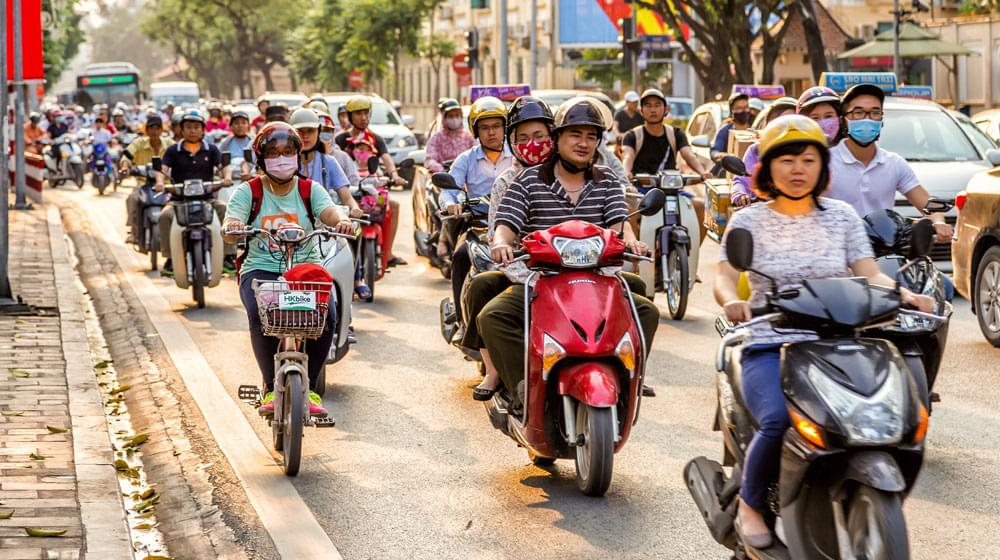Scooters dominate the streets of Vietnam, and renting one is the ultimate way to explore, but only if you’re confident and experienced. Otherwise, taxis, Grab (Southeast Asia’s ride-hailing app), and buses are safe and affordable options. For longer trips, consider trains or budget airlines. Always agree on taxi fares upfront or insist on the meter to avoid overcharging.
4. Shopping and Bargaining
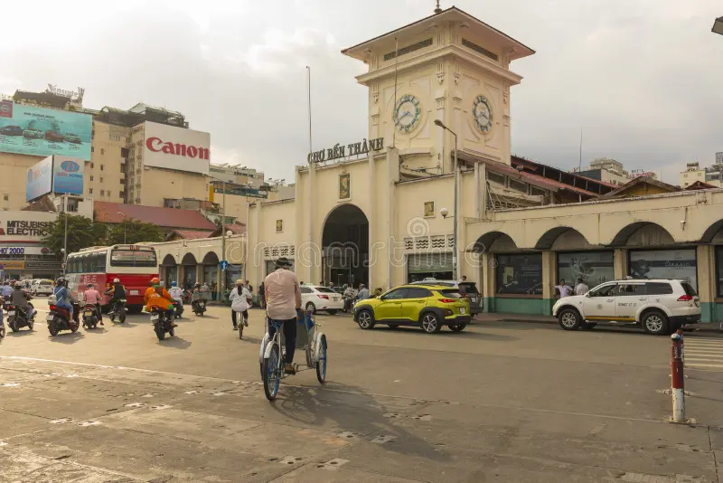Markets and street stalls are perfect for souvenirs, handicrafts, and local snacks. Don’t hesitate to bargain politely — it’s expected and part of the fun! Start by offering about half the asking price and negotiate from there. Always smile and be respectful; sometimes walking away can bring a better offer.
5. Packing Essentials
.webp)
Pack light but smart! Bring breathable, quick-dry clothes for the tropical climate, a rain jacket for sudden showers, and comfortable walking shoes. A reusable water bottle, sunscreen, insect repellent, and a universal adapter will save you headaches. Don’t forget a scarf or shawl for temple visits to cover shoulders.